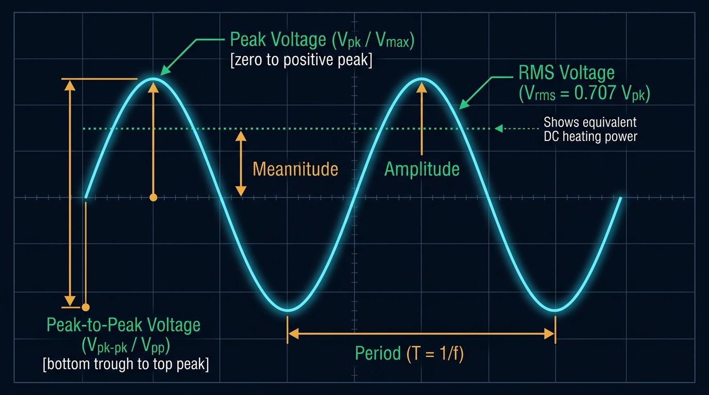
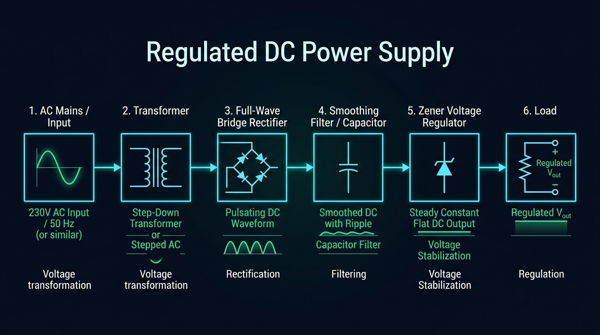
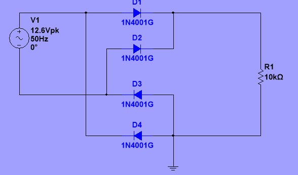
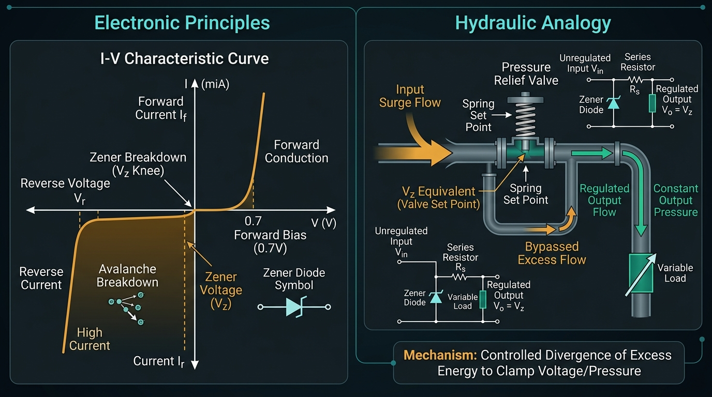
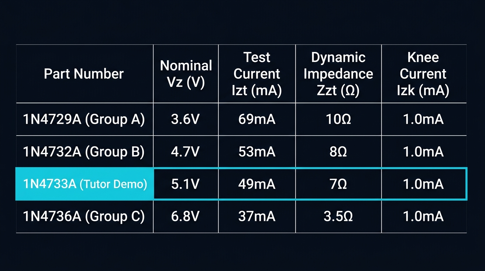

Week 2: “Protect and Control the Power”
Diode Devices, Rectification, Capacitor Smoothing, & Zener Voltage Regulation
Welcome back to Unit 19: Electronic Devices and Circuits. Today, you step into the role of a Junior Power Electronics Engineer. You will explore PN junction semiconductors, predict and simulate waveforms, construct physical rectification circuits on breadboard, extract parameters from real datasheets, and engineer a regulated DC power supply meeting an allocated voltage and ripple specification.
Lesson Aim & Session Outcomes
Pearson BTEC Level 3 Engineering — Unit 19 Learning Aim A (Week 2)
Investigate diode devices and develop, simulate, build and test a regulated full-wave rectifier meeting an allocated output specification.
- Identify different diode types and uses;
- Construct and simulate a half-wave rectifier;
- Follow the class demonstration: 5.1 V Zener with $\le 1.7\text{ V}$ ripple;
- Develop your own group specification after the break (3.6 V, 4.7 V, or 6.8 V);
- Build the final prototype;
- Record output voltage and estimate ripple for different loads;
- Compare theory, simulation and measurement.
Engineering Knowledge, Skills & Behaviours (KSBs)
Developing Practical Competence as a Junior Power Electronics Engineer
🧠 Knowledge (K)
- PN junction physics: forward bias ($V_f \approx 0.70\text{ V}$ Si, $0.30\text{ V}$ Schottky) & reverse breakdown.
- Rectification topologies: half-wave ($f_r = f_{in}$) vs full-wave bridge ($f_r = 2 f_{in}$).
- Smoothing capacitor filtering dynamics & input ripple: $V_{r(in), p-p} \approx \frac{I_{in}}{2 f C}$.
- Zener attenuation: $V_{r(out), p-p} \approx V_{r(in), p-p} \cdot \left( \frac{r_z}{R_S + r_z} \right)$.
🛠️ Skills (S)
- Simulate diode circuits virtually in Multisim / Tinkercad before physical breadboarding.
- Construct robust bridge rectifiers and verify polarity orientation on breadboard.
- Measure DC output voltage and oscilloscope/DMM ripple under variable resistive loads.
- Extract datasheet parameters ($V_Z, I_{ZT}, Z_{ZT}, I_{ZK}$) to compute maximum regulator ripple.
🤝 Behaviours (B)
- Predict before powering: never power up without a calculated expectation.
- Safety vigilance: verify capacitor discharge and electrolytic polarities.
- Evidence-based engineering: explain root causes of discrepancies rather than guessing.
- Team collaboration and accurate data logging.
Master Formula Sheet: Power Supply & Regulator Calculations
Structured Mathematical Equations for AC Rectification, Smoothing & Zener Attenuation
⚡ 1. Peak & DC Voltages
🧮 2. Resistor & Capacitor Sizing
📉 3. Output Ripple Attenuation
🔥 4. Power Dissipation Checks
Glossary of Mathematical Terms & Circuit Variables
Clear Step-by-Step Definitions of Quantities and Symbols Used in Power Calculations
$V_{in(min)}$: Lowest ripple trough voltage ($V_m - V_r = 9.63\text{ V}$).
$I_{ZK}$: Minimum knee current required to sustain breakdown ($1.0\text{ mA}$).
$I_{in}$ ($I_S$): Total current supplied by filter capacitor ($I_S = I_Z + I_L \approx 3.82\text{ mA}$).
Engineering Toolbox: Cumulative Baseline Retrieval
Retrieving Week 1 Safety, Polarity, Schematic Symbols, & Multimeter Configuration
State one mandatory check before switching on a DC bench supply.
What should you do before randomly pulling and changing components?
How must multimeter test leads be connected to measure voltage across a component (Series or Parallel)?
If a breadboard circuit begins to smoke, what is your immediate FIRST step?
• Resistor Voltage: $$V_R = V_s - V_f = 6.00\text{ V} - 0.70\text{ V} = 5.30\text{ V}$$ • Circuit Current: $$I = \frac{V_R}{R} = \frac{5.30\text{ V}}{330\ \Omega} \approx 16.06\text{ mA}$$
WEEK 2 – WORKPLACE ENGINEERING CHALLENGE
Role: Junior Power Electronics Engineer — Regulated Power Conversion
A prototype subsystem requires a controlled low-voltage DC supply, but the available source is AC.
• Group B: 4.7 V (1N4732A, Ripple $\le 1.5\text{ V}_{pp}$)
• Group C: 6.8 V (1N4736A, Ripple $\le 0.5\text{ V}_{pp}$)
- Identify diode types and uses.
- Simulate a half-wave rectifier.
- Develop a full-wave rectifier with smoothing and regulation.
- Build and test the prototype.
- Record output voltage and ripple for different loads.
- Compare theory, simulation and physical measurement.
- Submit your evidence through the Week 2 Microsoft Forms PoE route.
Diode Discovery: Device Types & Engineering Applications
Comparing Semiconductor Diode Characteristics, Ratings & Datasheet Selection
Engineering Use: AC to DC power conversion, polarity protection.
Key Specs: $V_{f} \approx 0.70\text{ V} - 1.10\text{ V}$, $I_F = 1.0\text{ A}$,
$V_{RRM} = 50\text{ V}$.
Engineering Use: High-speed signal clipping, digital logic clamping.
Key Specs: Ultrafast switching ($t_{rr} \le 4\text{ ns}$), $I_F = 200\text{ mA}$.
Engineering Use: Stable DC voltage regulation & reference sources.
Key Specs: Sharp reverse breakdown ($V_Z = 3.6\text{V}, 4.7\text{V}, 5.1\text{V},
6.8\text{V}$), $P_D = 1.0\text{ W}$.
Engineering Use: Visual status indicators, displays, optocouplers.
Key Specs: $V_f \approx 1.80\text{ V} - 3.20\text{ V}$, $I_F = 10 - 20\text{ mA}$.
Engineering Use: Light detection, optical communication, tachometers.
Key Specs: Operated in reverse bias; dark current vs photocurrent.
Engineering Use: High-efficiency switch-mode power supplies (SMPS).
Key Specs: Metal-semiconductor junction, low $V_f \approx 0.30\text{ V}$, fast
recovery.
AC Waveform Parameters: Amplitude, Peak, Peak-to-Peak & RMS
Understanding Essential Voltage Definitions on the Oscilloscope and DMM

System Block Diagram: Regulated DC Power Supply
Stage-by-Stage Energy Transformation from High-Voltage AC to Clamped DC

Stage 1: Half-Wave Rectifier — Predict & Simulate
Multisim / Tinkercad Virtual Simulation & Peak Output Waveform Analysis

• Diode blocks negative half-cycle ($V_{out} = 0\text{ V}$, diode reverse-biased).
• Ripple frequency: $f_r = 50\text{ Hz}$ (equal to source frequency).
Stage 2 & 3: Full-Wave Bridge Rectifier & Smoothing
Four-Diode Conduction Loop, Full-Wave Inversion & Capacitor Ripple Reduction

- ✅ Efficiency: Both positive and negative half-cycles supply current to load.
- ✅ Ripple Frequency: Doubles to $f_r = 2 \times f_{in} = 100\text{ Hz}$, making filtering much easier!
- ⚠️ Diode Drop Loss: Two series diodes conduct simultaneously: $$V_m = \sqrt{2}V_{rms} - 2V_D = 12.73\text{ V} - 1.40\text{ V} \approx 11.33\text{ V}$$
- ⚡ Capacitor Discharge Equation: $$V_{r(in), p-p} \approx \frac{I_{in}}{2 f C}$$
Stage 4: What is Zener Voltage Regulation? — Physics & Mechanics
Operating in Reverse Breakdown, Constant Potential Clamping & Resistor $R_s$ Sizing

Unlike standard diodes which block reverse current until destructive breakdown, a Zener Diode is heavily doped to exploit controlled Avalanche / Zener Breakdown.
• When $V_{in} > V_Z$, current enters the sharp breakdown knee.
• Across wide current shifts, voltage remains clamped at nominal $V_Z$.
• Series Resistor ($R_s$): Absorbs excess voltage ($V_{Rs} = V_{dc(in)} - V_Z$) and limits current: $$I_{in} = I_S = \frac{V_{dc(in)} - V_Z}{R_S} = I_Z + I_L$$
Step-by-Step Design Procedure: 5.1 V Regulated Supply
Structured Component Calculation: $V_{rms} = 9\text{V}$, $V_Z = 5.1\text{V}$ (1N4733A), Max Ripple $\le 1.7\text{V}$
1️⃣ Load Currents ($I_L$)
2️⃣ Peak & Minimum DC Input
3️⃣ Sizing Series Resistor ($R_S$)
• Max Resistance: $$R_{S(max)} = \frac{9.63\text{V} - 5.1\text{V}}{1.085\text{mA} + 2.0\text{mA}} = \frac{4.53\text{V}}{3.085\text{mA}} \approx 1468\ \Omega$$ • Standard Selection: $$\mathbf{R_S = 1.2\text{ k}\Omega \text{ or } 1.5\text{ k}\Omega \quad (1200\ \Omega \text{ optimal})}$$
4️⃣ Sizing Filter Capacitor ($C$)
Datasheet Parameter Extraction & Output Ripple Attenuation
Official 1N47xx Electrical Specifications & Step-by-Step Output Ripple Calculation

Using $V_{r(in), p-p} = 1.7\text{ V}$, $R_S = 1200\ \Omega$, and $r_z \approx 7\ \Omega$: $$V_{r(out), p-p} \approx 1.7\text{ V} \cdot \left( \frac{7\ \Omega}{1200\ \Omega + 7\ \Omega} \right) \approx 9.86\text{ mV}_{p-p} \quad (\ll 100\text{ mV})$$ Power Ratings Verification:
• Resistor Power: $$P_{RS} = \frac{(11.33\text{V} - 5.1\text{V})^2}{1200\ \Omega} \approx 0.032\text{ W} \quad (\text{Safe for } 0.25\text{W})$$ • Zener Dissipation: $$P_Z = 5.1\text{V} \cdot (4.48\text{mA} - 0.23\text{mA}) \approx 21.7\text{ mW} \quad (\ll 1.0\text{ W})$$
Independent Lesson Time: Your Group Engineering Challenge
Retrieve Your Group Allocation in Teams, Calculate Parameters & Complete Prototype Design
Please check the Microsoft Teams class folder for your individual group allocation. Use this dedicated independent lesson time to design, calculate, and document your assigned power supply stage:
- Calculate Load Currents: Compute $I_L = \frac{V_Z}{R_L}$ for $R_L = 4.7\text{ k}\Omega, 10\text{ k}\Omega, 22\text{ k}\Omega$.
- Sizing $R_S$: Determine maximum series resistance $R_{S(max)} = \frac{V_{in(min)} - V_Z}{I_{L(max)} + I_{Z(min)}}$.
- Sizing Smoothing Capacitor: Determine $C \ge \frac{I_{in}}{2 f V_{r(in)}}$ to meet your ripple specification.
- Calculate Output Ripple Attenuation: Calculate $V_{r(out), p-p} \approx V_{r(in), p-p} \cdot \left(\frac{r_z}{R_S + r_z}\right)$ using extracted datasheet $r_z$.
- Multisim Verification: Build your group circuit in simulation, verify voltages at TP1/TP2, and take clean screenshots.
Hardware Prototype Build & Pre-Power Verification
Breadboard Assembly, Polarity Checkpoint, and Safe Energisation Protocols
Perform these checks before connecting the AC bench source:
- 1. Component values verified ($R_s = 1.5\text{ k}\Omega$, $R_L = 4.7\text{ k}\Omega, 10\text{ k}\Omega, 22\text{ k}\Omega$, $C_1 = 47\ \mu\text{F} / 100\ \mu\text{F}$).
- 2. Diode polarities verified in bridge (silver band = cathode).
- 3. Zener orientation checked (Cathode to positive rail for reverse bias).
- 4. Electrolytic capacitor polarity verified (Negative stripe to 0V ground).
- 5. No visible short circuits across output rails; current limit set on bench supply.
Place bridge diodes, smoothing capacitor, series resistor $R_S$, and Zener regulator on breadboard. Verify schematic connections against layout, hooks up multimeter/oscilloscope probes at TP1 and TP2, and logs live readings.
Load Current & Ripple Voltage Investigation
Interactive Measurement Logging Across Development Stages and Variable Loads
| Stage | Theory (V) | Sim (V) | Measured (V) |
|---|---|---|---|
| Half-Wave Peak | |||
| Bridge Peak | |||
| Smoothed DC (C1) | |||
| Regulated (Demo / Group) |
| Load Resistor ($R_L$) | Est. Vpp | Sim Vpp | Measured Vpp |
|---|---|---|---|
| Load 1: $4.7\text{ k}\Omega$ | |||
| Load 2: $10\text{ k}\Omega$ | |||
| Load 3: $22\text{ k}\Omega$ |
Theory, Simulation & Reality: Engineering Discrepancy Analysis
Quantifying Percentage Difference and Root-Cause Engineering Explanations
Real components exhibit physical tolerances and non-ideal characteristics:
- 🔹 Diode Forward Drop Variation: Silicon diodes vary between $0.62\text{ V}$ and $0.85\text{ V}$ depending on instantaneous junction temperature and current density.
- 🔹 Electrolytic Capacitor Tolerances: Standard capacitors have wide manufacturing tolerances (typically $\pm 20\%$), shifting measured filter ripple.
- 🔹 Source Internal Resistance: Transformer and bench signal generators have non-zero source impedance ($R_{int}$), causing input voltage sag under load.
- 🔹 Zener Dynamic Impedance ($r_z$): Zener breakdown curves have finite slope ($7\ \Omega$), so $V_Z$ varies slightly with current.
$$\%\text{ Diff} = \frac{|5.04 - 5.10|}{5.10} \times 100\% = 1.18\% \quad (\text{Well within } 5\% \text{ tolerance})$$
Did your circuit maintain regulation across all 3 load resistances? What improvement (e.g. larger capacitance, active transistor pass regulator) would you investigate next?
PoE A02: Diode Engineering Investigation Submission
Capturing Authentic Practical Evidence to Power Assessment A Progress
- ✅ 1. Diode Applications: Summary of 6 diode types and realistic engineering uses.
- ✅ 2. Half-Wave & Bridge Schematics: Multisim simulation screenshots with marked peak voltages.
- ✅ 3. Developed Prototype: Capacitor smoothing and Zener regulation component reasoning.
- ✅ 4. Datasheet Extraction: Recorded $V_Z, I_{ZT}, Z_{ZT}$ and calculated maximum ripple step.
- ✅ 5. Breadboard Photograph: High-resolution image of your working prototype circuit.
- ✅ 6. Measurement Table: Theory vs Simulation vs Measured voltages and ripple for 3 loads.
- ✅ 7. Technical Justification: Discrepancy analysis explaining differences between theory and reality.
Submit your PoE evidence via the Microsoft 365 environment.
• Evidence is my own authentic work.
• All measured values include units ($\text{V, mA, mV, }\mu\text{F}$).
• Allocated Demo / Group A/B/C output specification is recorded.
• Differences are explained using engineering reasoning.
Engineer Exit Ticket: Cumulative Retrieval
Consolidating Today's Diode Concepts, Week 1 Safety, & Engineering Troubleshooting Reasoning
Explain one fundamental difference between half-wave and full-wave rectification in terms of ripple frequency and conduction cycles.
State one safe troubleshooting principle from Week 1 before replacing components.
A measured output voltage differs from your prediction. State TWO engineering diagnostic steps to perform before concluding a component is faulty.
Excellent engineering investigation today! You have successfully taken alternating voltage, rectified it through bridge diodes, filtered ripple with capacitors, extracted datasheet parameters, and clamped it to stable DC with a Zener regulator.
Transistor Investigation — “Control a Real Load”
Bipolar Junction Transistors (BJTs), switching modes (Cutoff vs Saturation), and small-signal
amplification.